<!DOCTYPE html>
<html lang="ja">
<head>
  <meta charset="UTF-8">
  <meta name="viewport" content="width=device-width, initial-scale=1.0">
  <title>エコハウステイスト診断</title>
  
  <!-- Tailwind CSS (デザインを整えるツール) を読み込み -->
  <script src="https://cdn.tailwindcss.com"></script>
  
  <!-- React を読み込み -->
  <script src="https://unpkg.com/react@18/umd/react.production.min.js" crossorigin></script>
  <script src="https://unpkg.com/react-dom@18/umd/react-dom.production.min.js" crossorigin></script>
  
  <!-- Babel (Reactのコードをブラウザ用に変換するツール) を読み込み -->
  <script src="https://unpkg.com/@babel/standalone/babel.min.js"></script>

  <style>
    /* アニメーション用のスタイル */
    @keyframes fadeIn { from { opacity: 0; } to { opacity: 1; } }
    @keyframes slideUp { from { opacity: 0; transform: translateY(10px); } to { opacity: 1; transform: translateY(0); } }
    @keyframes slideRight { from { opacity: 0; transform: translateX(-10px); } to { opacity: 1; transform: translateX(0); } }
    .animate-slide-up { animation: slideUp 0.4s ease-out forwards; }
    .animate-slide-right { animation: slideRight 0.3s ease-out forwards; }
    .animate-fade-in { animation: fadeIn 0.2s ease-out forwards; }
  </style>
</head>
<body class="bg-[#ebe6dd]">
  <!-- ここにアプリが表示されます -->
  <div id="root"></div>

  <!-- ここから下がアプリのプログラム（React）です -->
  <script type="text/babel" data-type="module">
    import { initializeApp } from "https://www.gstatic.com/firebasejs/11.6.1/firebase-app.js";
    import { getAuth, signInWithCustomToken, signInAnonymously, onAuthStateChanged } from "https://www.gstatic.com/firebasejs/11.6.1/firebase-auth.js";
    import { getFirestore } from "https://www.gstatic.com/firebasejs/11.6.1/firebase-firestore.js";

    const { useState, useEffect } = React;

    // --- Firebase 初期化（Canvas環境用のおまじない） ---
    const firebaseConfig = typeof __firebase_config !== 'undefined' ? JSON.parse(__firebase_config) : {};
    let app, auth, db;
    try {
      app = initializeApp(firebaseConfig);
      auth = getAuth(app);
      db = getFirestore(app);
    } catch (e) {
      console.error("Firebase init error", e);
    }
    const appId = typeof __app_id !== 'undefined' ? __app_id : 'default-app-id';

    // ==========================================
    // アイコンコンポーネント
    // ==========================================
    const ChevronLeft = ({ size = 24, className = "" }) => (
      <svg xmlns="http://www.w3.org/2000/svg" width={size} height={size} viewBox="0 0 24 24" fill="none" stroke="currentColor" strokeWidth="2" strokeLinecap="round" strokeLinejoin="round" className={className}>
        <path d="m15 18-6-6 6-6"/>
      </svg>
    );
    const RotateCcw = ({ size = 24, className = "" }) => (
      <svg xmlns="http://www.w3.org/2000/svg" width={size} height={size} viewBox="0 0 24 24" fill="none" stroke="currentColor" strokeWidth="2" strokeLinecap="round" strokeLinejoin="round" className={className}>
        <path d="M3 12a9 9 0 1 0 9-9 9.75 9.75 0 0 0-6.74 2.74L3 8"/><path d="M3 3v5h5"/>
      </svg>
    );

    // ==========================================
    // デザイン・設定データ
    // ==========================================
    const tastes = [
      { id: 'natural', name: 'ナチュラル' },
      { id: 'antique', name: 'アンティーク' },
      { id: 'industrial', name: 'インダストリアル' },
      { id: 'japanese', name: '和モダン' },
      { id: 'hotel', name: 'ホテルライク' },
      { id: 'nordic', name: 'ミッドセンチュリー' },
    ];

    // 36枚の写真をそれぞれ指定されたファイル名で読み込み、個別の解説文を設定
    const casesData = {
      natural: [
        { id: 'natural-0', image: './images/N0.jpg', title: '明るく開放的なLDK', description: '大きな窓から自然光がたっぷり入る、明るく開放的なLDK。むき出しの木の梁や柱、木目のキッチンが温もりを感じさせ、大きな観葉植物がよく似合う空間です。' },
        { id: 'natural-1', image: './images/N1.jpg', title: '自然素材が心地よいダイニング', description: '斜め張りの木材が目を引くキッチンカウンターが主役のダイニング。ルーバー扉やラタンの照明など、自然素材をふんだんに取り入れた爽やかなスタイルです。' },
        { id: 'natural-2', image: './images/N2.jpg', title: 'カフェのような居心地の良い空間', description: 'モスグリーンのタイルで仕上げたキッチンカウンターと、木板張りの下がり天井がアクセント。木目の家具とたっぷりのグリーンが調和する、カフェのような居心地の良い空間です。' },
        { id: 'natural-3', image: './images/N3.jpg', title: 'ラフで自由な土間キッチン', description: '柱や梁、白い板張りの壁など、古い建物の趣を残しつつリノベーション。土間に置かれた大きなステンレスキッチンや木のテーブルが、ラフで自由な暮らしを想像させます。' },
        { id: 'natural-4', image: './images/N4.jpg', title: '庭の緑を楽しむナチュラルな住まい', description: '白い正方形タイルで造作されたアイランドキッチンと、木の梁見せ天井のコントラストが美しいLDK。大きな窓から庭の緑を楽しめる、明るくナチュラルな住まいです。' },
        { id: 'natural-5', image: './images/N5.jpg', title: '光が通り抜けるサニタリー', description: 'ガラスの建具で仕切られた、光が通り抜ける開放的なサニタリースペース。コンクリート土間に自転車や観葉植物を無造作に置き、インドアグリーンのある暮らしを満喫できます。' }
      ],
      antique: [
        { id: 'antique-0', image: './images/A0.jpg', title: '落ち着いた色合いのアンティーク空間', description: 'クラシックな柄の壁紙とレンガ調の柱が目を引くリビング。ダークグリーンのキッチンカウンターや天井の木目など、落ち着いた色合いでまとめたアンティーク空間です。' },
        { id: 'antique-1', image: './images/A1.jpg', title: '特別なディスプレイスペース', description: '重厚な木製キャビネットやアンティークのフロアランプが存在感を放つ、ショップのような一角。お気に入りの小物を並べて楽しむ、特別なディスプレイスペースです。' },
        { id: 'antique-2', image: './images/A2.jpg', title: 'レトロなタイルが彩るダイニング', description: 'むき出しのコンクリート梁と、使い込まれた大きな木製の食器棚が絶妙にマッチ。レトロなタイル張りのキッチンとグリーンが彩りを添える、居心地の良いダイニングです。' },
        { id: 'antique-3', image: './images/A3.jpg', title: 'アトリエのようなワークスペース', description: '年月を経た味わい深い木のデスクや小引き出しを並べた、アトリエのようなワークスペース。静かな時間が流れ、読書や趣味に没頭できる大人のための隠れ家です。' },
        { id: 'antique-4', image: './images/A4.jpg', title: 'ヨーロッパの伝統を感じるリビング', description: '重厚な木製キャビネットや猫脚のテーブル、シャンデリアがヨーロッパの伝統を感じさせるリビング。ベルベット調のソファや絨毯が、エレガントな雰囲気をさらに高めます。' },
        { id: 'antique-5', image: './images/A5.jpg', title: '優雅で明るい洋館風リビング', description: '吹き抜けの開放感とアーチ状の開口部が美しい、洋館を思わせるリビング。パーケットフローリングに大きな柱時計やクラシカルなソファが馴染む、優雅で明るい空間です。' }
      ],
      industrial: [
        { id: 'industrial-0', image: './images/I0.jpg', title: '洗練された無骨なLDK', description: 'むき出しの黒い鉄骨とヘリンボーンの床が印象的な広々としたLDK。ダークウッドのキッチンカウンターやブルーのソファが、無骨さの中に洗練された雰囲気をプラスしています。' },
        { id: 'industrial-1', image: './images/I1.jpg', title: '男前なインダストリアルリビング', description: 'ラフなコンクリートむき出しの壁と天井が目を引くリビング。黒いダクトレール照明やインダストリアルなフロアランプ、ヴィンテージ調の小物が男前な空間を演出しています。' },
        { id: 'industrial-2', image: './images/I2.jpg', title: '無機質とグリーンの美しい対比', description: '古材を使ったキッチンカウンターと、無機質なコンクリート壁のコントラストが美しい空間。天井から吊るしたたくさんのグリーンが、クールな部屋に温かみと彩りを添えています。' },
        { id: 'industrial-3', image: './images/I3.jpg', title: 'スタイリッシュなハードテイスト', description: 'ステンレス製の大きなアイランドキッチンが存在感を放つLDK。天井のむき出し配管やスツールなど、工場や倉庫のようなハードな要素をスタイリッシュにまとめています。' },
        { id: 'industrial-4', image: './images/I4.jpg', title: 'ブルックリンスタイルのリビング', description: 'モルタル調の壁と、真鍮のような輝きを放つ大型のペンダントライトが特徴的なリビング。重厚なレザーソファや黒枠の室内窓が、ブルックリンスタイルのようなかっこよさを引き立てます。' },
        { id: 'industrial-5', image: './images/I5.jpg', title: '自由でクリエイティブな小上がり空間', description: 'コンクリートの天井や壁をそのまま活かした、天井が高く開放的なリビング。一段上がった木造りの小上がりスペースや無骨なスチール家具が、自由でクリエイティブな暮らしを感じさせます。' }
      ],
      japanese: [
        { id: 'japanese-0', image: './images/J0.jpg', title: '和の趣とモダンが交差するダイニング', description: '木の温もりを感じる柱と板張りの天井が印象的なダイニング。障子風の窓やグレーのアクセントウォールが、和の趣とモダンな雰囲気を絶妙にミックスしています。' },
        { id: 'japanese-1', image: './images/J1.jpg', title: 'ノスタルジックな和のキッチン', description: '細やかなモザイクタイルとステンレスの組み合わせがスタイリッシュなキッチン。使い込まれた木の扉やアンティークな食器棚が、ノスタルジックな和の空気を醸し出します。' },
        { id: 'japanese-2', image: './images/J2.jpg', title: '開放感あふれる古民家風LDK', description: '古民家の立派な梁や屋根裏をそのまま活かした、開放感あふれるLDK。モザイクタイルのカウンターやインダストリアルな照明が、和の空間に新しい息吹をもたらしています。' },
        { id: 'japanese-3', image: './images/J3.jpg', title: '和の静けさを感じるルーバー窓の空間', description: '美しい木目の勾配天井と、光を優しく取り込むルーバー窓が特徴的な空間。造作のキッチンカウンターや室内の一角に設けた緑が、和の静けさを感じさせます。' },
        { id: 'japanese-4', image: './images/J4.jpg', title: '縁側からの光が心地よいリビング', description: '伝統的な日本家屋の造りを残しつつ、モダンな囲炉裏テーブルを中央に配置。縁側から差し込む光が心地よい、広々とした畳と板間のリビングです。' },
        { id: 'japanese-5', image: './images/J5.jpg', title: '趣深い土間風の和空間', description: '土間の名残を感じる広いスペースに、モルタル仕上げのモダンなキッチンを新設。奥の和室や坪庭の緑を眺めながら食事を楽しめる、趣深い和空間です。' }
      ],
      hotel: [
        { id: 'hotel-0', image: './images/H0.jpg', title: 'リゾートホテルのような安らぎの空間', description: '木目の天井や柱と、石目調のアクセントウォールが調和する上質なリビング。自然素材の温かみと洗練されたデザインが融合した、リゾートホテルのような安らぎの空間です。' },
        { id: 'hotel-1', image: './images/H1.jpg', title: '高級ホテルのラウンジ風モダンリビング', description: 'グレーを基調としたシックで都会的なリビング。大理石調の壁面パネルやゆったりとした大型ソファを配置し、高級ホテルのラウンジを思わせるモダンな空間に仕上げました。' },
        { id: 'hotel-2', image: './images/H2.jpg', title: '華やかで洗練されたLDK', description: '黒いフレームのガラスパーテーションが空間をスタイリッシュに仕切るLDK。印象的なデザインのペンダントライトや間接照明が、華やかで洗練された雰囲気を演出します。' },
        { id: 'hotel-3', image: './images/H3.jpg', title: '大人の隠れ家ホテルのようなリビング', description: 'レンガ調の壁やコンクリートの質感が目を引く、重厚感のある空間。レザーのラウンジチェアを配し、ヴィンテージテイストを取り入れた大人の隠れ家ホテルのようなリビングです。' },
        { id: 'hotel-4', image: './images/H4.jpg', title: 'くつろぎの時間を過ごすベッドルーム', description: '落ち着いたグレージュのアクセントクロスと間接照明が、心地よい眠りを誘うベッドルーム。アートや小ぶりのソファを設え、くつろぎの時間を過ごすプライベートルームに。' },
        { id: 'hotel-5', image: './images/H5.jpg', title: '白とグレーの開放的なリビング', description: '吹き抜けからたっぷりと光が降り注ぐ、白とグレーで統一された開放的なリビング。石目調のテレビボード壁面やバーチカルブラインドが、空間をよりシャープに魅せています。' }
      ],
      nordic: [
        { id: 'nordic-0', image: './images/M0.jpg', title: 'ポップで楽しいミッドセンチュリー', description: '吹き抜けの開放的なリビングに、鮮やかなブルーのソファとイエローのチェアが映える空間。グリーンのアクセントウォールや木製の手すりが、ポップで楽しいミッドセンチュリーの世界観を演出しています。' },
        { id: 'nordic-1', image: './images/M1.jpg', title: '和と洋が調和したリビングダイニング', description: '美しい木目の板張り天井とパーケットフローリングが、空間全体に温かみを与えます。青緑色のソファや和紙のペンダントライトなど、和と洋が調和した落ち着きのあるリビングダイニングです。' },
        { id: 'nordic-2', image: './images/M2.jpg', title: 'ゆったり過ごせる大人の上質空間', description: '壁一面に設けられた造作の本棚と、暖炉が印象的な大人のリビング。コーデュロイの大きなソファや籐のラウンジチェアに身を委ね、ゆったりとした時間を過ごせる上質な空間です。' },
        { id: 'nordic-3', image: './images/M3.jpg', title: '建築美を感じる芸術的な空間', description: 'ダイナミックな板張り天井と、温かみのあるレンガ壁が特徴的な建築美を感じる空間。大きな窓から見える緑と、個性的なデザインのチェアが、芸術的な雰囲気を醸し出しています。' },
        { id: 'nordic-4', image: './images/M4.jpg', title: 'レトロモダンなレンガ壁のリビング', description: '外の景色を大胆に取り込む大きな窓と、重厚なレンガ壁のコントラストが美しいリビング。ヴィンテージ感のあるレザーソファや幾何学模様のラグが、レトロモダンな雰囲気を強調します。' },
        { id: 'nordic-5', image: './images/M5.jpg', title: 'レトロで温かいカフェ風ダイニング', description: '壁の腰壁や造作キャビネットなど、ふんだんに使われた木の質感が心地よいダイニング。特徴的なペンダントライトやたくさんの観葉植物が、レトロで温かいカフェのような空間を作っています。' }
      ]
    };

    // ==========================================
    // 共通コンポーネント
    // ==========================================
    const Button = ({ children, onClick, variant = 'primary', className = '' }) => {
      // rounded-full を追加して角を丸くしました
      const base = "font-bold py-3 px-6 rounded-full transition-all flex items-center justify-center gap-2";
      const variants = {
        primary: "bg-orange-400 text-white shadow-[0_4px_0_0_#c2410c] active:shadow-[0_0px_0_0_#c2410c] active:translate-y-1",
        secondary: "bg-white text-gray-700 shadow-[0_4px_0_0_#e5e7eb] border-2 border-gray-100 active:shadow-[0_0px_0_0_#e5e7eb] active:translate-y-1",
      };
      return (
        <button onClick={onClick} className={`${base} ${variants[variant]} ${className}`}>
          {children}
        </button>
      );
    };

    // ==========================================
    // メインアプリコンポーネント
    // ==========================================
    function App() {
      const [step, setStep] = useState(1);
      const [selectedTaste, setSelectedTaste] = useState(null);
      const [selectedCase, setSelectedCase] = useState(null);

      // --- 直接送信用のステートとデータベース認証 ---
      const [user, setUser] = useState(null);
      const [name, setName] = useState("");
      const [contact, setContact] = useState("");
      const [message, setMessage] = useState("");
      const [isSubmitting, setIsSubmitting] = useState(false);
      const [errorMsg, setErrorMsg] = useState("");
      
      // --- 追加ステート（生活スタイル、欲しいものなど） ---
      const [lifestyleAnswers, setLifestyleAnswers] = useState({
        q1: "",
        q2: "",
        q3: "",
        q4: "",
        q5: ""
      });
      const [wantedFeatures, setWantedFeatures] = useState([]);
      const [step5Error, setStep5Error] = useState("");

      // アプリ起動時にデータベースへの接続認証を行う
      useEffect(() => {
        if (!auth) return;
        const initAuth = async () => {
          try {
            if (typeof __initial_auth_token !== 'undefined' && __initial_auth_token) {
              await signInWithCustomToken(auth, __initial_auth_token);
            } else {
              await signInAnonymously(auth);
            }
          } catch (e) {
            console.error("Auth error", e);
          }
        };
        initAuth();
        const unsubscribe = onAuthStateChanged(auth, setUser);
        return () => unsubscribe();
      }, []);

      // ★ 送信ボタンが押されたときの処理（Slack連携用にWebhookに変更）
      const handleSendDirect = async () => {
        setErrorMsg("");
        if (!name.trim()) {
          setErrorMsg("お名前を入力してください。");
          return;
        }
        
        setIsSubmitting(true);
        try {
          // ==============================================================
          // ★ 手順ステップ3で取得したWebhook URLを下の "" の中に貼り付けてください。
          // 例: const webhookUrl = "https://hook.us1.make.com/xxxxxxxxxxxxxxx";
          // ==============================================================
          const webhookUrl = "https://hook.eu1.make.com/t4owxtu16pz830mbyshk1mdpoqhwoy6m"; 

          const formattedLifestyle = `収納:${lifestyleAnswers.q1} / 洗濯:${lifestyleAnswers.q2} / 買い物:${lifestyleAnswers.q3} / キッチン:${lifestyleAnswers.q4} / 洗面脱衣:${lifestyleAnswers.q5}`;

          // Webhook（Slack）へ送るデータの中身
          const payload = {
            tasteName: selectedTaste.name,
            caseId: selectedCase.id,
            caseTitle: selectedCase.title,
            diagnosticTitle: diagnosticResults[selectedCase.id].title.replace('\n', ' '),
            lifestyle: formattedLifestyle,
            wantedFeatures: wantedFeatures.join("、"),
            name: name,
            contact: contact,
            message: message
          };

          // WebhookURLが設定されている場合のみ送信処理を実行
          if (webhookUrl !== "ここにコピーしたURLを貼り付けます") {
            const response = await fetch(webhookUrl, {
              method: "POST",
              headers: { "Content-Type": "application/json" },
              body: JSON.stringify(payload)
            });

            if (!response.ok) {
              throw new Error("Network response was not ok");
            }
          } else {
            // URLが設定されていない場合は、テストとしてコンソールに表示して完了画面に進む
            console.log("Webhookが設定されていません。送信データ:", payload);
          }

          // 送信成功でステップ8（完了画面）へ進む
          setStep(8);
          window.scrollTo(0, 0);
        } catch (e) {
          console.error("Send error", e);
          setErrorMsg("送信に失敗しました。時間をおいて再度お試しください。");
        } finally {
          setIsSubmitting(false);
        }
      };
      // --- ここまで変更 ---

      // --- 診断結果データ（36事例個別） ---
      const diagnosticResults = {
        // ▼ ナチュラルテイスト (N0〜N5)
        'natural-0': {
          title: "太陽と緑の心地よさを愛する\n「オープン・ナチュラル」タイプ",
          description: "あなたは飾らない自然な美しさに惹かれ、家族が自然と集まる明るい空間を求めています。太陽の光をたっぷり浴びながら、日々のささやかな出来事を大切にする、穏やかで前向きな心の持ち主です。",
          advice: "大きな窓を活かした明るい間取りがおすすめ。無垢材の家具や、部屋のシンボルとなるような大ぶりの観葉植物を取り入れると、さらに深呼吸したくなるような居心地の良さが生まれます。"
        },
        'natural-1': {
          title: "手仕事の温もりを愛する\n「クラフト・ナチュラル」タイプ",
          description: "あなたは木やラタンなどの自然素材が持つ、手触りや風合いに魅力を感じるタイプです。流行に流されず、長く使い込むほどに味わいが増すアイテムに囲まれた、丁寧な暮らしを好みます。",
          advice: "木目を活かした造作家具や、ラタン（籐）を使った照明・チェアを取り入れると魅力が引き立ちます。リネンやコットンなど、肌触りの良い天然素材のファブリックを選ぶのが統一感を出すポイントです。"
        },
        'natural-2': {
          title: "くつろぎの時間を楽しむ\n「カフェ・ナチュラル」タイプ",
          description: "あなたは自分のペースを大切にし、お気に入りのカフェで過ごすようなリラックスした時間を愛しています。親しい人を招いてコーヒーを淹れたり、おしゃべりを楽しんだりする時間が何よりの癒しです。",
          advice: "キッチンを対面式のカウンターにし、こだわりのタイルやペンダントライトでカフェ風に演出してみましょう。木目調の下がり天井を取り入れると、空間にメリハリと落ち着きが生まれます。"
        },
        'natural-3': {
          title: "飾らない自由を愛する\n「ラフ・ナチュラル」タイプ",
          description: "あなたは既存のルールに縛られず、自分らしさを自由に表現できる空間に惹かれます。ピカピカの新品よりも、少し使い込まれたようなラフな雰囲気に「こなれ感」と居心地の良さを感じるタイプです。",
          advice: "あえて柱や梁を見せるリノベーション風の仕上げや、土間空間を取り入れるのがおすすめ。ステンレスキッチンやアイアン脚の木のテーブルなど、異素材をミックスするとグッとおしゃれになります。"
        },
        'natural-4': {
          title: "外とのつながりを楽しむ\n「ガーデン・ナチュラル」タイプ",
          description: "あなたは季節の移ろいや自然の風景を生活の一部として楽しみたい、感受性豊かなタイプです。室内だけでなく、庭やテラスも含めた「外とのつながり」を大切にした暮らしを求めています。",
          advice: "リビングと庭をフラットに繋ぐ大きな窓や、ウッドデッキの設置が理想的。室内にも庭の緑と調和するような自然素材をふんだんに使い、どこにいても自然を感じられる設計にしましょう。"
        },
        'natural-5': {
          title: "アクティブに緑と暮らす\n「ボタニカル・ナチュラル」タイプ",
          description: "あなたは植物を育てることや、自転車・アウトドアなどの趣味をアクティブに楽しむタイプです。実用性とデザイン性を兼ね備えた、趣味の道具や緑が映える空間づくりを得意とします。",
          advice: "土間やサンルームなど、汚れを気にせず趣味の道具を置けたり、植物の手入れができる半屋外的なスペースを作るのがおすすめ。ガラスの建具を使うと、空間を仕切りつつ明るさを保てます。"
        },

        // ▼ アンティークテイスト (A0〜A5)
        'antique-0': {
          title: "クラシカルな静寂を愛する\n「トラディショナル・アンティーク」タイプ",
          description: "あなたは歴史や伝統が息づく、重厚で落ち着きのある空間に惹かれます。深い色合いやクラシックなパターンの美しさを理解し、静かな時間の中で読書や思索を楽しむことができる大人な感性の持ち主です。",
          advice: "ダークトーンの木材や、深みのあるグリーン、ボルドーなどの色を取り入れた空間づくりがおすすめ。柄物の壁紙をアクセントにしたり、真鍮パーツを随所に散りばめると雰囲気が出ます。"
        },
        'antique-1': {
          title: "お気に入りを愛でる\n「コレクター・アンティーク」タイプ",
          description: "あなたは一つ一つのモノの背景にある物語を大切にし、お気に入りのアイテムを美しく飾ることに喜びを感じます。まるでアンティークショップのような、こだわりが詰まった空間を好むタイプです。",
          advice: "お気に入りの食器や小物を飾るための、存在感のある木製キャビネットや飾り棚を主役にしましょう。フロアランプなどの間接照明でコレクションを照らすと、特別感がさらに増します。"
        },
        'antique-2': {
          title: "ノスタルジックな温もりを好む\n「レトロ・アンティーク」タイプ",
          description: "あなたはどこか懐かしく、人の温もりを感じる空間に安心感を覚えます。新しさや洗練さよりも、使い込まれた道具が放つ優しい空気感や、肩の力を抜いて過ごせる日常を愛するタイプです。",
          advice: "レトロな柄のタイルを使ったキッチンや、あえてコンクリートの梁を見せるなど、少し無骨で温かみのある要素を取り入れましょう。古道具やドライフラワーがとてもよく似合う空間になります。"
        },
        'antique-3': {
          title: "静かな没入感を求める\n「アトリエ・アンティーク」タイプ",
          description: "あなたは自分だけの趣味や創作活動に没頭できる、秘密基地のような空間に憧れています。静かに時が流れるような、少し薄暗くて落ち着きのあるアトリエのような雰囲気を好むタイプです。",
          advice: "LDKの一部に、味わい深い木のデスクや小引き出しを置けるワークスペース（書斎）を設けるのがおすすめ。照明を少し落とし気味にして、作業に集中できるこもり感のある空間を作りましょう。"
        },
        'antique-4': {
          title: "エレガントな伝統を愛する\n「ヨーロピアン・アンティーク」タイプ",
          description: "あなたはヨーロッパの伝統的な美意識や、品格のある優雅なスタイルに強く惹かれます。日常の中にも、まるで映画のワンシーンのようなドラマチックでエレガントな要素を求めているタイプです。",
          advice: "シャンデリアや猫脚の家具、ベルベット調のソファなど、クラシカルで高級感のあるアイテムを取り入れましょう。壁にはモールディング（装飾縁）を施すと、より本格的な洋館の雰囲気に近づきます。"
        },
        'antique-5': {
          title: "優雅な洋館の趣を好む\n「クラシック・アンティーク」タイプ",
          description: "あなたは開放感がありながらも、クラシックなディテールが施された上質な空間に魅力を感じます。古き良き洋館のような、明るく優雅で、時間がゆっくりと流れるような暮らしを理想としています。",
          advice: "吹き抜けやアーチ状の開口部など、空間の形状自体にクラシカルな要素を取り入れるのがポイント。床にはパーケット（寄せ木）フローリングを選ぶと、大きな柱時計やアンティーク家具が美しく馴染みます。"
        },

        // ▼ インダストリアルテイスト (I0〜I5)
        'industrial-0': {
          title: "洗練された無骨さを好む\n「アーバン・インダストリアル」タイプ",
          description: "あなたは鉄骨やコンクリートといったハードな素材に惹かれつつも、あくまでスマートで都会的な美しさを求めています。無骨さと洗練のバランス感覚に優れ、モダンな空間づくりが得意です。",
          advice: "むき出しの鉄骨やヘリンボーンの床など、特徴的な素材を使いつつ、色数は抑えてシックにまとめるのがコツ。濃い色の木材や、ブルーなど深みのある色のソファを合わせると都会的な印象になります。"
        },
        'industrial-1': {
          title: "ハードな素材感を愛する\n「ヴィンテージ・インダストリアル」タイプ",
          description: "あなたはガレージや古い工場のような、荒々しく男前なテイストをこよなく愛しています。綺麗に整えられた空間よりも、素材の質感がダイレクトに伝わるような、無骨で力強い空間に惹かれるタイプです。",
          advice: "壁や天井はコンクリートむき出しにし、照明には黒いダクトレールやインダストリアルランプを。アイアン家具やレザーソファ、ヴィンテージ雑貨を配置して、思い切りハードに振り切るのが正解です。"
        },
        'industrial-2': {
          title: "無機質×生命力の対比を楽しむ\n「ボタニカル・インダストリアル」タイプ",
          description: "あなたはコンクリートなどの冷たい素材と、植物の温かい生命力を組み合わせた空間に新鮮な魅力を感じます。クールなカッコよさの中に、ほっとできる癒しや有機的な要素を取り入れたいタイプです。",
          advice: "無機質な壁を背景にして、天井からハンギングプランツを吊るしたり、大小の観葉植物をたくさん配置しましょう。古材を使ったキッチンや家具を合わせることで、冷たすぎない絶妙なバランスになります。"
        },
        'industrial-3': {
          title: "機能美とハードさを追求する\n「ファクトリー・インダストリアル」タイプ",
          description: "あなたはプロ用の厨房や、機能性を極めた工場のようなストイックな空間に惹かれます。無駄な装飾を削ぎ落とし、道具としての美しさや使い勝手の良さをとことん追求したい本格派です。",
          advice: "オールステンレスの大きなアイランドキッチンを空間の主役に据えるのがおすすめ。天井の配管やダクトはあえて隠さず見せることで、より一層ファクトリー（工場）のような雰囲気を強調できます。"
        },
        'industrial-4': {
          title: "海外のアパルトマンに憧れる\n「ブルックリン・インダストリアル」タイプ",
          description: "あなたはニューヨークのブルックリン地区にあるような、古いレンガ造りの建物をリノベーションしたスタイルに憧れています。重厚感とカジュアルさが混在する、かっこいい空間づくりが得意です。",
          advice: "モルタル調の壁や、黒枠のガラス室内窓を取り入れると一気にブルックリンスタイルに。真鍮やゴールド系の大型ペンダントライトや、使い込まれたような厚手のレザーソファが空間を引き締めます。"
        },
        'industrial-5': {
          title: "自由な発想で空間を使う\n「クリエイティブ・インダストリアル」タイプ",
          description: "あなたは一般的なLDKの概念にとらわれず、空間を立体的・多目的に使いたいと考えるクリエイター気質です。遊び心があり、型にはまらない自由な暮らしのアイデアをたくさん持っています。",
          advice: "天井を高くしてコンクリートの質感を活かしつつ、部屋の一部に木製の「小上がり」を作るなど、段差で空間を仕切るアイデアがおすすめ。スチールと木を組み合わせた家具でラフにまとめましょう。"
        },

        // ▼ 和モダンテイスト (J0〜J5)
        'japanese-0': {
          title: "伝統と現代を美しく調和させる\n「洗練・和モダン」タイプ",
          description: "あなたは日本の伝統的な建築美に敬意を払いながらも、現代のライフスタイルに合った快適さを求めています。和の趣とモダンなデザインをバランスよくミックスさせる、センスの良い空間づくりが得意です。",
          advice: "無垢の柱や板張りの天井など木の温もりをベースに、グレーのアクセントクロスやシャープなデザインの家具を合わせてみましょう。障子をモダンにアレンジした建具を取り入れるのも効果的です。"
        },
        'japanese-1': {
          title: "懐かしさと新しさを楽しむ\n「ノスタルジック・和モダン」タイプ",
          description: "あなたは古い日本家屋や昭和のレトロな雰囲気に、どこか心惹かれるものを感じています。昔からある素材やデザインと、現代の新しい素材を組み合わせることで生まれる、独特の空気感を愛するタイプです。",
          advice: "ステンレスのキッチンに、モザイクタイルや使い込まれた木製のアンティーク食器棚を合わせてみましょう。新旧のアイテムをミックスすることで、カフェのような居心地の良いノスタルジック空間になります。"
        },
        'japanese-2': {
          title: "古き良き骨組みを活かす\n「古民家・和モダン」タイプ",
          description: "あなたは長い年月を耐え抜いた太い梁や大黒柱など、古民家が持つ力強い生命力に魅力を感じます。古い建物の良さをそのまま活かしつつ、自分らしい新しい息吹を吹き込むようなダイナミックな空間を好みます。",
          advice: "リノベーションであれば既存の立派な梁を見せる天井に。新築でも、あえて古材風の太い梁を渡すことで古民家風の開放感が出せます。インダストリアルな照明など、少しハードなアイテムがよく似合います。"
        },
        'japanese-3': {
          title: "光と影の静寂を愛する\n「陰影礼賛・和モダン」タイプ",
          description: "あなたは明るくピカピカな空間よりも、少し翳り（かげり）のある、静かで落ち着いた空間に心の安らぎを覚えます。格子や障子越しに入る柔らかな光と影の美しさを楽しむことができる、豊かな感性の持ち主です。",
          advice: "木目の美しい勾配天井や、光を優しく調節できるルーバー（羽板）窓を取り入れるのがおすすめ。強い直射日光を避け、間接照明を効果的に使うことで、旅館のような静寂を感じる空間になります。"
        },
        'japanese-4': {
          title: "縁側の心地よさに惹かれる\n「伝統回帰・和モダン」タイプ",
          description: "あなたは畳の匂いや、縁側でのんびり過ごす時間など、日本の伝統的な暮らしのスタイルに強く惹かれています。家族が自然と顔を合わせ、四季の移ろいを肌で感じながら暮らしたいと願うタイプです。",
          advice: "フローリングのリビングに隣接して、小上がりの畳スペースや広縁（ひろえん）を設けるのが理想的。現代的な囲炉裏テーブルなどを置き、家族や友人が車座になってくつろげる空間を作りましょう。"
        },
        'japanese-5': {
          title: "内外の境界を曖昧に楽しむ\n「土間・和モダン」タイプ",
          description: "あなたは日本の伝統的な「土間」空間の面白さに気づき、それを現代の暮らしに取り入れたいと考えています。家の中でありながら外のようにも使える、多目的で趣のある空間づくりに惹かれています。",
          advice: "玄関から続く広い土間スペースを作り、そこにモダンなモルタルキッチンやダイニングを配置する大胆な間取りがおすすめ。坪庭の緑を眺めながら食事を楽しめる、特別な日常が手に入ります。"
        },

        // ▼ ホテルライクテイスト (H0〜H5)
        'hotel-0': {
          title: "上質なリゾート感を求める\n「リゾート・ホテルライク」タイプ",
          description: "あなたは南国の高級リゾートホテルのような、心からリラックスできる極上の空間に憧れています。自然素材の持つ温かみと、洗練されたデザインが融合した、非日常的な癒しを求めるタイプです。",
          advice: "木目の美しい天井や柱と、重厚感のある石目調の壁を組み合わせるのがポイント。家具はロースタイルでゆったりとしたものを選び、間接照明で壁の質感を際立たせるとリゾート感がアップします。"
        },
        'hotel-1': {
          title: "ラグジュアリーな日常を愛する\n「アーバン・ホテルライク」タイプ",
          description: "あなたは都心の高級ホテルのラウンジのような、シックで都会的な空間に惹かれます。生活感を感じさせないスマートな暮らしと、本物志向のラグジュアリーな素材感を愛するタイプです。",
          advice: "全体をグレーやモノトーンの落ち着いた色調でまとめ、大理石調の壁面パネルや床材で高級感を演出しましょう。上質なファブリックの大型ソファを中心に置くと、ホテルのようなスケール感が出ます。"
        },
        'hotel-2': {
          title: "スタイリッシュで華やかな\n「モダン・ホテルライク」タイプ",
          description: "あなたは洗練されたデザインの中に、目を引く華やかなアクセントを効かせるのが得意です。シンプルすぎる空間よりも、計算された照明やデザイン性の高いインテリアパーツで空間を彩ることに魅力を感じます。",
          advice: "LDKの仕切りに黒いフレームのガラスパーテーションを使うなど、空間をシャープに区切るのがおすすめ。デザイン性の高いペンダントライトを多灯吊りすることで、空間が一気に華やかになります。"
        },
        'hotel-3': {
          title: "重厚で落ち着きのある\n「隠れ家・ホテルライク」タイプ",
          description: "あなたは明るくオープンな空間よりも、少しトーンを落とした、重厚で隠れ家のような空間に安らぎを感じます。上質なレザーやレンガなど、深みのある素材に囲まれてお酒や音楽を楽しみたい大人なタイプです。",
          advice: "レンガ調のアクセントクロスやコンクリートの質感を壁に取り入れ、全体をダークトーンでまとめましょう。ヴィンテージ感のあるレザーのラウンジチェアを置けば、極上のパーソナルスペースが完成します。"
        },
        'hotel-4': {
          title: "極上のプライベート空間を求める\n「リトリート・ホテルライク」タイプ",
          description: "あなたは家を「心と体を回復させる場所（リトリート）」として捉えており、特に寝室などのプライベートな空間の質を重視します。肌触りの良い寝具や優しい灯りに包まれた、至福の休息を求めるタイプです。",
          advice: "寝室はグレージュなどの落ち着いた色合いのクロスを選び、柔らかな間接照明のみで光をデザインしましょう。ベッドの横にアートを飾ったり、小ぶりのソファを置いて読書スペースを作ると完璧です。"
        },
        'hotel-5': {
          title: "開放的でシャープな美を好む\n「ミニマル・ホテルライク」タイプ",
          description: "あなたは無駄な装飾やノイズを極限まで削ぎ落とした、ミニマルで開放的な空間の美しさに惹かれます。白とグレーを基調とした、清潔感と緊張感が同居するシャープなデザインを好むタイプです。",
          advice: "吹き抜けからの自然光を最大限に活かすため、壁は白、床はグレーなど極力色を絞りましょう。石目調のテレビボードやバーチカル（縦型）ブラインドで縦のラインを強調すると、空間がより洗練されます。"
        },

        // ▼ ミッドセンチュリーテイスト (M0〜M5 / id: nordic)
        'nordic-0': {
          title: "色彩で遊び心を表現する\n「ポップ・ミッドセンチュリー」タイプ",
          description: "あなたは鮮やかな色彩や大胆なデザインを恐れず、空間に遊び心を取り入れるのが大得意です。1950〜60年代のポジティブでエネルギーに満ちたデザインに共感し、毎日を楽しく暮らしたいと考えています。",
          advice: "ベースとなる空間はシンプルにしつつ、鮮やかなブルーのソファやイエローのチェアなど、発色の良い名作家具を主役に。壁の一部をグリーンなどのアクセントクロスにするのも効果的です。"
        },
        'nordic-1': {
          title: "多国籍なミックス感を楽しむ\n「ボーダーレス・ミッドセンチュリー」タイプ",
          description: "あなたは和や洋、古いものや新しいものなど、異なるテイストを自分らしくミックスさせるセンスに長けています。特定の様式にこだわらず、自分が「美しい」「心地よい」と感じるものを自由に集めるタイプです。",
          advice: "木の温もりを感じる板張りの天井や床をベースに、ミッドセンチュリーデザインのソファや、和紙を使ったモダンなペンダントライトを合わせてみましょう。国籍を問わない調和が生まれます。"
        },
        'nordic-2': {
          title: "知的な時間を愛する\n「ラウンジ・ミッドセンチュリー」タイプ",
          description: "あなたは読書や音楽鑑賞など、豊かな知的な時間を大切にしています。ただ生活するだけでなく、本やレコードに囲まれながら、名作家具に身を委ねてゆったりと過ごせるラウンジのような空間に憧れるタイプです。",
          advice: "リビングの壁一面に天井まで届く造作の本棚を設け、空間の主役にしましょう。暖炉（または暖炉風のヒーター）の側にコーデュロイのソファや籐のラウンジチェアを置けば、極上のくつろぎ空間に。"
        },
        'nordic-3': {
          title: "建築と家具の造形美を愛する\n「アーキテクト・ミッドセンチュリー」タイプ",
          description: "あなたは空間の構造や、家具の美しいシルエットなど「造形美」に強く惹かれます。名作チェアなど、デザイナーの思想が詰まったインテリアをアートのように空間に配置して楽しみたいタイプです。",
          advice: "ダイナミックな勾配天井や、温かみのあるレンガ壁など、建築そのものに特徴を持たせるのがおすすめ。そこに曲線が美しい個性的なデザインのチェアを置くことで、互いの美しさが引き立ちます。"
        },
        'nordic-4': {
          title: "レトロとモダンの融合を好む\n「ヴィンテージ・ミッドセンチュリー」タイプ",
          description: "あなたは現代のモダンな建築と、レトロで味わいのある家具の融合に魅力を感じます。新品の家具にはないヴィンテージの重厚感や、幾何学模様などの特徴的なパターンを取り入れた空間づくりが得意です。",
          advice: "大きな窓のあるモダンなリビングに、あえて重厚なレンガ壁を取り入れるなど大胆なコントラストを。そこにヴィンテージ感のあるレザーソファや、幾何学模様のラグを合わせると一気に雰囲気が出ます。"
        },
        'nordic-5': {
          title: "温もりあるカフェ空間に憧れる\n「カフェ・ミッドセンチュリー」タイプ",
          description: "あなたは木の質感をふんだんに使った、少しレトロで温もりあふれる空間にほっとします。洗練されすぎず、肩の力を抜いてくつろげる、おしゃれな街のカフェのようなダイニングキッチンを愛するタイプです。",
          advice: "壁の下半分に板を張る「腰壁」や、木目の美しい造作キャビネットを取り入れましょう。少しレトロなデザインのペンダントライトを吊るし、たくさんの観葉植物を飾れば理想のカフェ空間になります。"
        }
      };

      const renderStep1 = () => (
        <div className="animate-slide-up">
          <div className="mb-6 text-center">
            <h2 className="text-xl font-bold text-gray-800">どんな雰囲気が好きですか？</h2>
          </div>
          <div className="grid grid-cols-2 gap-4 md:gap-6">
            {tastes.map(taste => (
              <button
                key={taste.id}
                onClick={() => {
                  setSelectedTaste(taste);
                  setStep(2);
                  window.scrollTo(0, 0);
                }}
                className="flex flex-col items-center w-full group"
              >
                <div className="w-full p-2 rounded-2xl border-2 bg-white border-gray-200 shadow-[0_4px_0_0_#e5e7eb] group-active:shadow-[0_0px_0_0_transparent] group-active:translate-y-[4px] transition-all mb-2">
                  
                </div>
                <span className="font-bold text-sm md:text-base text-gray-800 group-active:translate-y-[4px] transition-all">{taste.name}</span>
              </button>
            ))}
          </div>
        </div>
      );

      const renderStep2 = () => (
        <div className="animate-slide-right pb-6">
          <div className="mb-6 text-center">
            <h2 className="text-lg font-bold text-gray-800">
              {selectedTaste.name}の事例
            </h2>
          </div>
          <p className="text-center text-sm text-gray-500 mb-6">お好きな写真を選んでください</p>
          
          <div className="grid grid-cols-2 gap-4">
            {casesData[selectedTaste.id].map((caseItem, index) => (
              <button
                key={caseItem.id}
                onClick={() => {
                  setSelectedCase(caseItem);
                  setStep(3);
                  window.scrollTo(0, 0);
                }}
                className="bg-white p-2 rounded-2xl border-2 border-gray-100 shadow-[0_4px_0_0_#e5e7eb] active:shadow-[0_0px_0_0_#e5e7eb] active:translate-y-[4px] transition-all flex flex-col group overflow-hidden"
              >
                
              </button>
            ))}
          </div>

          <button 
            onClick={() => setStep(1)} 
            className="w-full mt-8 bg-[#dfd6cb] hover:bg-[#d4cbbd] active:bg-[#cabbab] text-gray-800 font-bold py-3.5 px-6 rounded-full transition-colors flex items-center justify-center gap-2 shadow-sm"
          >
            <svg xmlns="http://www.w3.org/2000/svg" width="24" height="24" viewBox="0 0 24 24" fill="currentColor"><path d="M16 5v14l-11-7z"/></svg>
            テイスト選択に戻る
          </button>
        </div>
      );

      const renderStep3 = () => (
        <div className="animate-slide-up flex flex-col items-center pt-2 pb-6">
          <div className="bg-white w-full rounded-3xl shadow-[0_4px_15px_rgba(0,0,0,0.05)] overflow-hidden mb-6 border border-gray-100">
            
            
            <div className="p-6 md:p-8 text-left">
              <h3 className="text-[1.1rem] md:text-xl font-bold text-[#5c8a22] mb-3">
                {selectedCase.title}
              </h3>
              
              <hr className="border-t-[1.5px] border-dashed border-gray-300 mb-4" />
              
              <p className="text-gray-700 leading-relaxed text-[15px] md:text-base">
                {selectedCase.description}
              </p>
            </div>
          </div>

          <button 
            onClick={() => {
              setStep(4);
              window.scrollTo(0, 0);
            }}
            className="w-full mb-5 bg-orange-500 hover:bg-orange-600 active:bg-orange-700 text-white font-bold py-4 px-6 rounded-full transition-all flex flex-col items-center justify-center gap-1 shadow-[0_4px_0_0_#c2410c] active:shadow-[0_0px_0_0_#c2410c] active:translate-y-1"
          >
            <span className="text-sm font-normal">この事例が好きなら...</span>
            <span className="text-[17px] md:text-lg flex items-center gap-2">
              <svg xmlns="http://www.w3.org/2000/svg" width="22" height="22" viewBox="0 0 24 24" fill="none" stroke="currentColor" strokeWidth="2" strokeLinecap="round" strokeLinejoin="round"><path d="m9 12 2 2 4-4"/><circle cx="12" cy="12" r="10"/></svg>
              あなたのインテリア傾向を診断する
            </span>
          </button>

          <button 
            onClick={() => setStep(2)} 
            className="w-full bg-[#dfd6cb] hover:bg-[#d4cbbd] active:bg-[#cabbab] text-gray-800 font-bold py-3.5 px-6 rounded-full transition-colors flex items-center justify-center gap-2 shadow-sm"
          >
            <svg xmlns="http://www.w3.org/2000/svg" width="24" height="24" viewBox="0 0 24 24" fill="currentColor"><path d="M16 5v14l-11-7z"/></svg>
            別の事例を見る
          </button>
        </div>
      );

      const renderStep4 = () => {
        const result = diagnosticResults[selectedCase.id];
        return (
          <div className="animate-slide-up flex flex-col items-center pt-2 pb-6">
            <div className="mb-6 text-center">
              <h2 className="text-xl font-bold text-gray-800">診断結果</h2>
              <p className="text-sm text-gray-500 mt-2">あなたの好みの傾向がわかりました</p>
            </div>

            <div className="bg-white w-full rounded-3xl shadow-[0_4px_15px_rgba(0,0,0,0.05)] overflow-hidden mb-8 border-2 border-emerald-500 relative">
              <div className="bg-emerald-500 text-white text-center py-2 text-sm font-bold tracking-wider">
                あなたのタイプ
              </div>
              <div className="p-6 md:p-8">
                <h3 className="text-lg md:text-xl font-bold text-gray-800 text-center mb-6 whitespace-pre-wrap leading-relaxed">
                  {result.title}
                </h3>
                
                <div className="bg-[#f8f9fa] rounded-xl p-4 md:p-5 mb-5">
                  <p className="text-gray-700 leading-relaxed text-[15px] md:text-base">
                    {result.description}
                  </p>
                </div>
                
                <div className="bg-orange-50 rounded-xl p-4 md:p-5 border border-orange-100">
                  <h4 className="text-orange-600 font-bold mb-3 flex items-center gap-2 text-[15px]">
                    <svg xmlns="http://www.w3.org/2000/svg" width="18" height="18" viewBox="0 0 24 24" fill="none" stroke="currentColor" strokeWidth="2" strokeLinecap="round" strokeLinejoin="round"><path d="M12 2v20"/><path d="M17 5H9.5a3.5 3.5 0 0 0 0 7h5a3.5 3.5 0 0 1 0 7H6"/></svg>
                    おすすめのアドバイス
                  </h4>
                  <p className="text-gray-700 leading-relaxed text-[14px] md:text-[15px]">
                    {result.advice}
                  </p>
                </div>
              </div>
            </div>

            <div className="w-full flex flex-col items-center">
              <button 
                onClick={() => {
                  setStep(5);
                  window.scrollTo(0, 0);
                }}
                className="w-full mb-5 bg-orange-500 hover:bg-orange-600 active:bg-orange-700 text-white font-bold py-4 px-6 rounded-full transition-all flex items-center justify-center gap-2 shadow-[0_4px_0_0_#c2410c] active:shadow-[0_0px_0_0_#c2410c] active:translate-y-1"
              >
                <span className="text-[17px] md:text-lg">理想の家づくりプランへ進む</span>
                <svg xmlns="http://www.w3.org/2000/svg" width="24" height="24" viewBox="0 0 24 24" fill="currentColor"><path d="M8 5v14l11-7z"/></svg>
              </button>
            </div>

            <button 
              onClick={() => {
                setStep(2);
                window.scrollTo(0, 0);
              }} 
              className="w-full mb-3 bg-[#dfd6cb] hover:bg-[#d4cbbd] active:bg-[#cabbab] text-gray-800 font-bold py-3.5 px-6 rounded-full transition-colors flex items-center justify-center gap-2 shadow-sm"
            >
              <svg xmlns="http://www.w3.org/2000/svg" width="24" height="24" viewBox="0 0 24 24" fill="currentColor"><path d="M16 5v14l-11-7z"/></svg>
              事例選択に戻る
            </button>

            <button 
              onClick={() => {
                setStep(1);
                window.scrollTo(0, 0);
              }} 
              className="w-full bg-[#dfd6cb] hover:bg-[#d4cbbd] active:bg-[#cabbab] text-gray-800 font-bold py-3.5 px-6 rounded-full transition-colors flex items-center justify-center gap-2 shadow-sm"
            >
              <RotateCcw size={18} /> 最初からやり直す
            </button>
          </div>
        );
      };

      const renderStep5 = () => {
        const questions = [
          { id: 'q1', text: '収納のスタイルは？', options: ['見せるオープン収納', '生活感を隠す収納'] },
          { id: 'q2', text: 'お洗濯は？', options: ['部屋干し', '外干し', '乾燥機'] },
          { id: 'q3', text: 'お買い物は？', options: ['買い溜め派', 'こまめに買う派'] },
          { id: 'q4', text: 'キッチンは？', options: ['対面キッチン', '壁付けキッチン'] },
          { id: 'q5', text: '洗面室と脱衣室は？', options: ['一緒がいい', '別がいい'] }
        ];

        const handleAnswer = (qId, option) => {
          setLifestyleAnswers(prev => ({ ...prev, [qId]: option }));
          setStep5Error("");
        };

        return (
          <div className="animate-slide-up flex flex-col items-center pt-2 pb-6">
            <div className="mb-6 text-center">
              <h2 className="text-xl font-bold text-gray-800">もう少し教えてください</h2>
              <p className="text-sm text-gray-500 mt-2">1/2: あなたにぴったりのプランをご提案します</p>
            </div>

            {step5Error && (
              <div className="text-red-500 text-sm font-bold bg-red-50 p-3 rounded-lg border border-red-100 mb-4 w-full text-center">
                {step5Error}
              </div>
            )}

            <div className="w-full bg-white rounded-3xl shadow-[0_4px_15px_rgba(0,0,0,0.05)] p-5 md:p-8 mb-6 border border-gray-100">
              <h3 className="font-bold text-gray-800 mb-6 flex items-center gap-2 border-b pb-3">
                理想の生活スタイルは？ <span className="text-red-500 text-xs font-normal ml-auto">全問必須</span>
              </h3>
              
              <div className="flex flex-col gap-6">
                {questions.map((q, idx) => (
                  <div key={q.id} className="flex flex-col gap-2">
                    <p className="text-sm font-bold text-gray-700">Q{idx + 1}. {q.text}</p>
                    <div className={`flex gap-2 ${q.id === 'q2' ? 'flex-nowrap' : 'flex-wrap'}`}>
                      {q.options.map(opt => (
                        <label key={opt} className={`flex-1 flex items-center justify-center text-center p-2 md:p-3 rounded-xl border-2 cursor-pointer transition-all ${lifestyleAnswers[q.id] === opt ? 'border-emerald-500 bg-emerald-50 text-emerald-700 font-bold shadow-sm' : 'border-gray-200 hover:border-emerald-200 text-gray-600 bg-[#fbfbfb]'} ${q.id !== 'q2' ? 'min-w-[120px]' : 'min-w-0 px-1 md:px-3'}`}>
                          <input 
                            type="radio" 
                            name={q.id} 
                            value={opt} 
                            checked={lifestyleAnswers[q.id] === opt} 
                            onChange={() => handleAnswer(q.id, opt)}
                            className="hidden"
                          />
                          <span className={`${q.id === 'q2' ? 'text-[12px] md:text-[15px]' : 'text-[13px] md:text-[15px]'}`}>{opt}</span>
                        </label>
                      ))}
                    </div>
                  </div>
                ))}
              </div>
            </div>

            <button 
              onClick={() => {
                const isAllAnswered = Object.values(lifestyleAnswers).every(val => val !== "");
                if (!isAllAnswered) {
                  setStep5Error("すべての質問にお答えください。");
                  return;
                }
                setStep(6);
                window.scrollTo(0, 0);
              }}
              className="w-full mb-5 bg-orange-500 hover:bg-orange-600 active:bg-orange-700 text-white font-bold py-4 px-6 rounded-full transition-all flex items-center justify-center gap-2 shadow-[0_4px_0_0_#c2410c] active:shadow-[0_0px_0_0_#c2410c] active:translate-y-1"
            >
              <span className="text-[17px] md:text-lg">次の質問へ進む</span>
              <svg xmlns="http://www.w3.org/2000/svg" width="24" height="24" viewBox="0 0 24 24" fill="currentColor"><path d="M8 5v14l11-7z"/></svg>
            </button>
            
            <button 
              onClick={() => {
                setStep(4);
                window.scrollTo(0, 0);
              }} 
              className="w-full bg-[#dfd6cb] hover:bg-[#d4cbbd] active:bg-[#cabbab] text-gray-800 font-bold py-3.5 px-6 rounded-full transition-colors flex items-center justify-center gap-2 shadow-sm"
            >
              <svg xmlns="http://www.w3.org/2000/svg" width="24" height="24" viewBox="0 0 24 24" fill="currentColor"><path d="M16 5v14l-11-7z"/></svg>
              診断結果に戻る
            </button>
          </div>
        );
      };

      const renderStep6 = () => {
        const featureOptions = [
          { id: 'f1', name: "パントリー", desc: "食品や飲料、日用品などをストックしておくための専用の収納スペース。キッチン周りがスッキリ片付きます。", image: "./images/F_pantry.jpg" },
          { id: 'f2', name: "ヌック", desc: "ちょっとした空間を利用した、小ぢんまりとした居心地の良いこもり部屋。読書や休憩にぴったりです。", image: "./images/F_nook.jpg" },
          { id: 'f3', name: "WIC（ウォークインクローゼット）", desc: "人が歩いて入れる広さのクローゼット。衣類だけでなく、スーツケースや季節家電などもまとめて収納できます。", image: "./images/F_wic.jpg" },
          { id: 'f4', name: "SIC（シューズインクローク）", desc: "靴や傘、ベビーカー、アウトドア用品などを土足のまま収納できる玄関横のスペースです。", image: "./images/F_sic.jpg" },
          { id: 'f5', name: "土間", desc: "靴のまま過ごせる屋内空間。自転車のメンテナンスやDIY、観葉植物の手入れなど多目的に使えます。", image: "./images/F_doma.jpg" },
          { id: 'f6', name: "ワークスペース", desc: "在宅ワークや趣味の作業に集中できる専用のスペース。リビングの一角や独立した部屋として設けます。", image: "./images/F_workspace.jpg" },
          { id: 'f7', name: "キッズスペース", desc: "お子様が安全に遊べる専用のスペース。おもちゃの収納場所にもなり、リビングが散らかりにくくなります。", image: "./images/F_kids.jpg" },
          { id: 'f8', name: "ペットスペース", desc: "ペットが快適に過ごせる専用の居場所や、散歩帰りに足を洗える洗い場など、ペットとの暮らしを豊かにする工夫です。", image: "./images/F_pet.jpg" },
          { id: 'f9', name: "ランドリールーム", desc: "「洗う・干す・畳む・アイロンがけ」が1カ所で完結する家事専用の部屋。家事動線が大幅に短縮されます。", image: "./images/F_laundry.jpg" },
          { id: 'f10', name: "インナーバルコニー", desc: "建物の内側に引っ込んだ、屋根のある半屋外のバルコニー。天候を気にせず洗濯物を干したりくつろいだりできます。", image: "./images/F_inner_balcony.jpg" },
          { id: 'f11', name: "インナーガレージ", desc: "建物の一部に組み込まれた車やバイクのためのガレージ。雨に濡れずに車に乗り降りでき、防犯性も高まります。", image: "./images/F_inner_garage.jpg" },
          { id: 'f12', name: "ホームライブラリー", desc: "壁一面の本棚や、読書に没頭できるスペース。本に囲まれた知的な時間を過ごせる空間です。", image: "./images/F_library.jpg" }
        ];

        const toggleFeature = (featureName) => {
          if (wantedFeatures.includes(featureName)) {
            setWantedFeatures(wantedFeatures.filter(f => f !== featureName));
          } else {
            setWantedFeatures([...wantedFeatures, featureName]);
          }
        };

        return (
          <div className="animate-slide-up flex flex-col items-center pt-2 pb-6">
            <div className="mb-6 text-center">
              <h2 className="text-xl font-bold text-gray-800">あと少しです</h2>
              <p className="text-sm text-gray-500 mt-2">2/2: あなたにぴったりのプランをご提案します</p>
            </div>

            <div className="w-full mb-8">
              <div className="flex items-center justify-between mb-4 px-1">
                <h3 className="font-bold text-gray-800 text-[17px]">
                  自宅に取り入れたいものは？
                </h3>
                <span className="text-emerald-700 font-bold text-xs bg-emerald-100 px-2.5 py-1 rounded-full shadow-sm">
                  複数選択可
                </span>
              </div>
              <div className="flex flex-col gap-4">
                {featureOptions.map(feature => {
                  const isSelected = wantedFeatures.includes(feature.name);
                  return (
                    <label
                      key={feature.id}
                      className={`relative flex flex-col rounded-2xl border-2 overflow-hidden cursor-pointer transition-all duration-200 ${
                        isSelected
                          ? 'border-emerald-500 shadow-[0_4px_15px_rgba(16,185,129,0.2)] scale-[1.02] bg-emerald-50 z-10'
                          : 'border-transparent bg-white shadow-[0_4px_10px_rgba(0,0,0,0.06)] hover:border-emerald-200'
                      }`}
                    >
                      <input
                        type="checkbox"
                        checked={isSelected}
                        onChange={() => toggleFeature(feature.name)}
                        className="hidden"
                      />
                      <div className="relative">
                        
                        {/* 選択時のチェックマークとオーバーレイ */}
                        {isSelected && (
                          <>
                            <div className="absolute inset-0 bg-emerald-900/10 mix-blend-multiply"></div>
                            <div className="absolute top-3 right-3 bg-emerald-500 text-white rounded-full p-1.5 shadow-lg animate-fade-in">
                              <svg xmlns="http://www.w3.org/2000/svg" width="20" height="20" viewBox="0 0 24 24" fill="none" stroke="currentColor" strokeWidth="3" strokeLinecap="round" strokeLinejoin="round"><polyline points="20 6 9 17 4 12"></polyline></svg>
                            </div>
                          </>
                        )}
                        {/* 未選択時のチェックボックス枠（丸） */}
                        {!isSelected && (
                          <div className="absolute top-3 right-3 w-7 h-7 rounded-full border-2 border-white bg-black/20 shadow-sm flex items-center justify-center backdrop-blur-sm"></div>
                        )}
                      </div>
                      <div className="p-4 md:p-5">
                        <h4 className={`font-bold text-[16px] mb-2 flex items-center gap-2 ${isSelected ? 'text-emerald-800' : 'text-gray-800'}`}>
                          {feature.name}
                        </h4>
                        <p className={`text-[13px] md:text-[14px] leading-relaxed ${isSelected ? 'text-emerald-700' : 'text-gray-600'}`}>
                          {feature.desc}
                        </p>
                      </div>
                    </label>
                  );
                })}
              </div>
            </div>

            <button 
              onClick={() => {
                setStep(7);
                window.scrollTo(0, 0);
              }}
              className="w-full mb-5 bg-orange-500 hover:bg-orange-600 active:bg-orange-700 text-white font-bold py-4 px-6 rounded-full transition-all flex items-center justify-center gap-2 shadow-[0_4px_0_0_#c2410c] active:shadow-[0_0px_0_0_#c2410c] active:translate-y-1"
            >
              <span className="text-[17px] md:text-lg">あなただけのプランを見る</span>
              <svg xmlns="http://www.w3.org/2000/svg" width="24" height="24" viewBox="0 0 24 24" fill="currentColor"><path d="M8 5v14l11-7z"/></svg>
            </button>
            
            <button 
              onClick={() => {
                setStep(5);
                window.scrollTo(0, 0);
              }} 
              className="w-full bg-[#dfd6cb] hover:bg-[#d4cbbd] active:bg-[#cabbab] text-gray-800 font-bold py-3.5 px-6 rounded-full transition-colors flex items-center justify-center gap-2 shadow-sm"
            >
              <svg xmlns="http://www.w3.org/2000/svg" width="24" height="24" viewBox="0 0 24 24" fill="currentColor"><path d="M16 5v14l-11-7z"/></svg>
              前の質問に戻る
            </button>
          </div>
        );
      };

      const renderStep7 = () => {
        // 選ばれたテイストの中から、最初に選んだ画像とは違う事例画像を1つピックアップする
        const otherCases = casesData[selectedTaste.id].filter(c => c.id !== selectedCase.id);
        const recommendImage = otherCases.length > 0 ? otherCases[0].image : selectedCase.image;

        return (
          <div className="animate-slide-up flex flex-col items-center pt-2 pb-6">
            <div className="mb-6 text-center">
              <h2 className="text-xl font-bold text-gray-800">あなたへのご提案</h2>
              <p className="text-sm text-gray-500 mt-2">理想の暮らしをカタチに</p>
            </div>

            <div className="bg-white w-full rounded-3xl shadow-[0_4px_15px_rgba(0,0,0,0.05)] overflow-hidden mb-8 border border-gray-100">
              <div className="relative">
                
                <div className="absolute inset-0 bg-gradient-to-t from-black/60 via-black/20 to-transparent flex items-end">
                  <div className="p-5 text-white">
                    <span className="inline-block bg-emerald-500 text-xs font-bold px-2 py-1 rounded mb-2">おすすめスタイル</span>
                    <h3 className="text-lg font-bold">{selectedTaste.name}の空間で叶える理想の暮らし</h3>
                  </div>
                </div>
              </div>
              
              <div className="p-6 md:p-8">
                <div className="bg-orange-50/50 rounded-xl p-5 border border-orange-100">
                  <p className="text-gray-700 leading-relaxed text-[15px] md:text-base mb-4 font-medium">
                    お客様が選ばれた「<span className="text-orange-600 font-bold">{selectedTaste.name}</span>」のテイスト。
                    その心地よい空間をベースに、お答えいただいた理想の生活スタイルを実現できる間取りをご提案します。
                  </p>
                  
                  {wantedFeatures.length > 0 && (
                    <p className="text-gray-700 leading-relaxed text-[15px] md:text-base mb-4">
                      ご希望の「<span className="font-bold">{wantedFeatures.join("、")}</span>」もしっかりと組み込み、毎日の生活がより豊かで快適になる工夫を散りばめます。
                    </p>
                  )}

                  <p className="text-gray-800 font-bold text-base md:text-[17px] leading-relaxed mt-6 text-center border-t border-orange-200 pt-4">
                    私たちエコハウスと一緒に、<br/>こんなワクワクする家づくりを叶えませんか？
                  </p>
                </div>
              </div>
            </div>

            {/* --- 直接送信フォームエリア --- */}
            <div className="bg-white w-full rounded-3xl shadow-[0_4px_15px_rgba(0,0,0,0.05)] p-6 md:p-8 mb-8 border border-gray-100">
              <h3 className="text-[1.1rem] font-bold text-gray-800 text-center mb-2">この結果を担当者に送信して相談する</h3>
              <p className="text-sm text-gray-500 text-center mb-6 leading-relaxed">
                以下のフォームにご記入の上、送信ボタンを押してください。後日担当者よりご連絡いたします。
              </p>
              
              <div className="flex flex-col gap-4 text-left">
                {errorMsg && (
                  <div className="text-red-500 text-sm font-bold bg-red-50 p-3 rounded-lg border border-red-100">
                    {errorMsg}
                  </div>
                )}
                <div>
                  <label className="block text-sm font-bold text-gray-700 mb-1">お名前 <span className="text-red-500">*</span></label>
                  <input 
                    type="text" 
                    value={name} 
                    onChange={e => setName(e.target.value)}
                    className="w-full p-3 rounded-xl border border-gray-300 focus:border-emerald-500 focus:ring-2 focus:ring-emerald-200 outline-none transition-all" 
                    placeholder="例: 山田 太郎"
                  />
                </div>
                <div>
                  <label className="block text-sm font-bold text-gray-700 mb-1">ご連絡先 (メールアドレスや電話番号)</label>
                  <input 
                    type="text" 
                    value={contact} 
                    onChange={e => setContact(e.target.value)}
                    className="w-full p-3 rounded-xl border border-gray-300 focus:border-emerald-500 focus:ring-2 focus:ring-emerald-200 outline-none transition-all" 
                    placeholder="例: sample@example.com"
                  />
                </div>
                <div>
                  <label className="block text-sm font-bold text-gray-700 mb-1">ご質問・ご要望など</label>
                  <textarea 
                    value={message} 
                    onChange={e => setMessage(e.target.value)}
                    className="w-full p-3 rounded-xl border border-gray-300 focus:border-emerald-500 focus:ring-2 focus:ring-emerald-200 outline-none transition-all h-24 resize-none text-sm md:text-base" 
                    placeholder="家づくりについて気になることや、お打ち合わせの希望日などがあればご記入ください。"
                  />
                </div>

                <button 
                  onClick={handleSendDirect}
                  disabled={isSubmitting}
                  className={`w-full text-white font-bold py-3.5 px-6 rounded-full transition-all flex items-center justify-center gap-2 mt-2 ${
                    isSubmitting ? 'bg-gray-400 cursor-not-allowed shadow-sm' : 'bg-orange-500 hover:bg-orange-600 active:bg-orange-700 shadow-[0_4px_0_0_#c2410c] active:shadow-[0_0px_0_0_#c2410c] active:translate-y-1'
                  }`}
                >
                  {isSubmitting ? (
                    <span className="flex items-center gap-2">
                      <svg className="animate-spin h-5 w-5 text-white" xmlns="http://www.w3.org/2000/svg" fill="none" viewBox="0 0 24 24">
                        <circle className="opacity-25" cx="12" cy="12" r="10" stroke="currentColor" strokeWidth="4"></circle>
                        <path className="opacity-75" fill="currentColor" d="M4 12a8 8 0 018-8V0C5.373 0 0 5.373 0 12h4zm2 5.291A7.962 7.962 0 014 12H0c0 3.042 1.135 5.824 3 7.938l3-2.647z"></path>
                      </svg>
                      送信中...
                    </span>
                  ) : (
                    <span className="flex items-center gap-2">
                      <svg xmlns="http://www.w3.org/2000/svg" width="20" height="20" viewBox="0 0 24 24" fill="none" stroke="currentColor" strokeWidth="2" strokeLinecap="round" strokeLinejoin="round"><path d="m22 2-7 20-4-9-9-4Z"/><path d="M22 2 11 13"/></svg>
                      この内容で送信する
                    </span>
                  )}
                </button>
              </div>
            </div>

            <button 
              onClick={() => {
                setStep(6);
                window.scrollTo(0, 0);
              }} 
              className="w-full bg-[#dfd6cb] hover:bg-[#d4cbbd] active:bg-[#cabbab] text-gray-800 font-bold py-3.5 px-6 rounded-full transition-colors flex items-center justify-center gap-2 shadow-sm"
            >
              <svg xmlns="http://www.w3.org/2000/svg" width="24" height="24" viewBox="0 0 24 24" fill="currentColor"><path d="M16 5v14l-11-7z"/></svg>
              質問に戻る
            </button>
          </div>
        );
      };

      const renderStep8 = () => (
        <div className="animate-slide-up flex flex-col items-center pt-10 pb-6 text-center">
          <div className="bg-emerald-100 text-emerald-600 rounded-full w-24 h-24 flex items-center justify-center mb-6 shadow-sm">
            <svg xmlns="http://www.w3.org/2000/svg" width="48" height="48" viewBox="0 0 24 24" fill="none" stroke="currentColor" strokeWidth="2" strokeLinecap="round" strokeLinejoin="round"><polyline points="20 6 9 17 4 12"></polyline></svg>
          </div>
          <h2 className="text-2xl font-bold text-gray-800 mb-4">送信完了しました</h2>
          <p className="text-gray-600 leading-relaxed mb-8 px-4 text-sm md:text-base">
            お客様の診断結果とメッセージを担当者にお送りしました。<br className="hidden md:inline" />
            確認次第、担当者よりご連絡させていただきますので、今しばらくお待ちください。
          </p>
          <button 
            onClick={() => {
              setStep(1);
              setName("");
              setContact("");
              setMessage("");
              setErrorMsg("");
              setLifestyleAnswers({ q1: "", q2: "", q3: "", q4: "", q5: "" });
              setWantedFeatures([]);
              window.scrollTo(0, 0);
            }} 
            className="w-full bg-[#dfd6cb] hover:bg-[#d4cbbd] active:bg-[#cabbab] text-gray-800 font-bold py-3.5 px-6 rounded-full transition-colors shadow-sm"
          >
            トップに戻る
          </button>
        </div>
      );

      return (
        <div className="min-h-screen font-sans flex justify-center">
          <div className="w-full max-w-md bg-[#f5f0e6] min-h-screen shadow-lg flex flex-col relative overflow-hidden">
            
            {/* ヘッダー部分 */}
            <header className="pt-4 pb-3 px-4 flex items-center justify-center gap-3 text-white bg-emerald-600 shadow-md mb-6 relative z-10 border-b border-emerald-700">
              <div className="h-20 w-20 flex items-center justify-center shrink-0">
                 
              </div>
              <h1 className="text-[17px] sm:text-lg font-extrabold tracking-wider">エコハウステイスト診断</h1>
            </header>

            <main className="flex-1 px-5 pb-10">
              {step === 1 && renderStep1()}
              {step === 2 && renderStep2()}
              {step === 3 && renderStep3()}
              {step === 4 && renderStep4()}
              {step === 5 && renderStep5()}
              {step === 6 && renderStep6()}
              {step === 7 && renderStep7()}
              {step === 8 && renderStep8()}
            </main>
          </div>
        </div>
      );
    }

    // アプリを画面に表示
    const root = ReactDOM.createRoot(document.getElementById('root'));
    root.render(<App />);
  </script>
</body>
</html>
